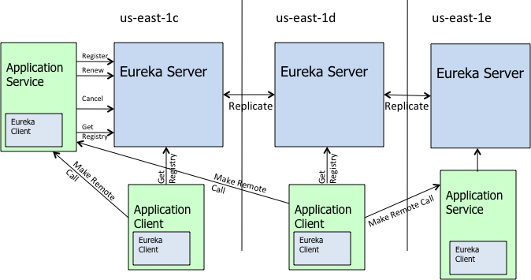
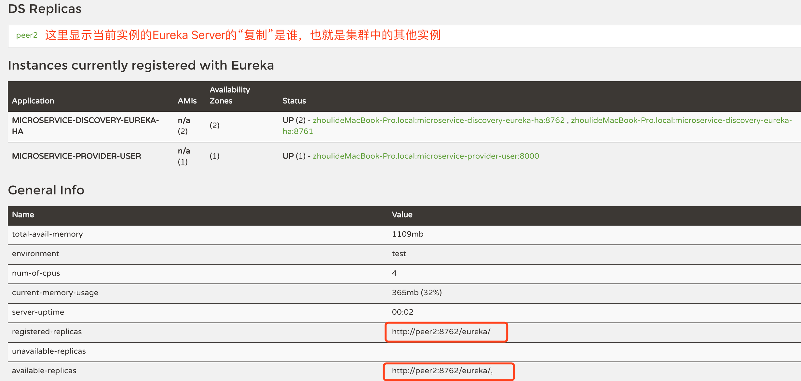

<!DOCTYPE HTML>
<html lang="zh-CN">
<head><meta name="generator" content="Hexo 3.8.0">
    <!--Setting-->
    <meta charset="UTF-8">
    <meta name="viewport" content="width=device-width, user-scalable=no, initial-scale=1.0, maximum-scale=1.0, minimum-scale=1.0">
    <meta http-equiv="X-UA-Compatible" content="IE=Edge,chrome=1">
    <meta http-equiv="Cache-Control" content="no-siteapp">
    <meta http-equiv="Cache-Control" content="no-transform">
    <meta http-equiv="pragma" content="no-cache">
    <meta http-equiv="Cache-Control" content="no-cache, must-revalidate">
    <meta http-equiv="expires" content="Mon Apr 06 2020 02:12:39 GMT+0800 (CST)">
    <meta name="renderer" content="webkit|ie-comp|ie-stand">
    <meta name="apple-mobile-web-app-capable" content="张万众的博客 - 关注Spring Cloud、Docker">
    <meta name="apple-mobile-web-app-status-bar-style" content="black">
    <meta name="format-detection" content="telephone=no,email=no,adress=no">
    <meta name="browsermode" content="application">
    <meta name="screen-orientation" content="portrait">
    <meta name="theme-version" content="1.2.3">
    <meta name="root" content="/">
    
    <!--SEO-->

    <meta name="keywords" content="Spring Cloud,Eureka,服务发现,注册中心">


    <meta name="description" content="在跟我学Spring Cloud（Finchley版）-05-服务注册与服务发现-Eureka入门 一节中，已经编写了一个Eureka Server，并将服务提供者与消费者都注册到了Eureka Server上。
本节，来深入探讨Eureka的高级特性。
Eureka原理本节来探讨Eureka...">


<meta name="robots" content="all">
<meta name="google" content="all">
<meta name="googlebot" content="all">
<meta name="verify" content="all">
    <!--Title-->


<title>跟我学Spring Cloud（Finchley版）-06-服务注册与服务发现-Eureka深入 | 张万众的博客 - 关注Spring Cloud、Docker</title>


    <link rel="alternate" href="../../atom.html" title="张万众的博客 - 关注Spring Cloud、Docker" type="application/atom+xml">


    

    


<link rel="stylesheet" href="../../static/css/bootstrap.min-271a649e0635d6fa1b.css">
<link rel="stylesheet" href="../../static/css/font-awesome.min-ac2bebcf7fb5b26.css">
<link rel="stylesheet" href="../../static/css/style-6f3c140f6eee20e6591da00ec0.css">


    


    <script>
        var _hmt = _hmt || [];
        (function() {
            var hm = document.createElement("script");
            hm.src = "https://hm.baidu.com/hm.js?13766878cde148282622871dd245a973";
            var s = document.getElementsByTagName("script")[0];
            s.parentNode.insertBefore(hm, s);
        })();
    </script>


    

</head>

</html>
<!--[if lte IE 8]>
<style>
    html{ font-size: 1em }
</style>
<![endif]-->
<!--[if lte IE 9]>
<div style="ie">你使用的浏览器版本过低，为了你更好的阅读体验，请更新浏览器的版本或者使用其他现代浏览器，比如Chrome、Firefox、Safari等。</div>
<![endif]-->

<body>
    
    <nav class="main-navigation">
    <div class="container">
        <div class="row clearfix">
            <div class="col-md-12 column">
                <nav class="navbar navbar-default" style="background-color:#fff;border:0;margin-bottom:0" role="navigation">
                    <div class="navbar-header">
                        <button type="button" class="navbar-toggle" data-toggle="collapse" data-target="#navbar-collapse-1">
                            <span class="sr-only">切</span>
                            <span class="icon-bar"></span>
                            <span class="icon-bar"></span>
                            <span class="icon-bar"></span>
                        </button>
                        <a class="logo" href="../../index.html">
                            张万众的博客
                        </a>
                    </div>

                    <div class="collapse navbar-collapse" style="border:0;" id="navbar-collapse-1">
                        <ul class="nav navbar-nav">
                            
                                
                                    <li>
                                        <a href="../../about.html" target="_blank">
                                            <i class="fa fa-user"></i>
                                            关于我
                                        </a>
                                    </li>
                                
                            
                                
                                    <li>
                                        <a href="../../archives.html" target="_blank">
                                            <i class="fa fa-archive"></i>
                                            归档
                                        </a>
                                    </li>
                                
                            
                                
                                    <li class="dropdown">
                                        <a href="#" class="dropdown-toggle" data-toggle="dropdown" data-hover="dropdown">
                                            <i class="fa fa-fire"></i>
                                            系列课程
                                            <strong class="caret"></strong>
                                        </a>
                                        <ul class="dropdown-menu">
                                            
                                                <li>
                                                    <a href="../../docker/00-docker-lession-index.html" target="_blank">
                                                        <i class="fa "></i>
                                                        Docker系列教程
                                                    </a>
                                                </li>
                                            
                                                <li>
                                                    <a href="../spring-cloud-index.html" target="_blank">
                                                        <i class="fa "></i>
                                                        Spring Cloud系列教程
                                                    </a>
                                                </li>
                                            
                                                <li>
                                                    <a href="../../spring-boot/spring-boot-index.html" target="_blank">
                                                        <i class="fa "></i>
                                                        Spring Boot系列教程
                                                    </a>
                                                </li>
                                            
                                        </ul>
                                    </li>
                                
                            
                                
                                    <li class="dropdown">
                                        <a href="#" class="dropdown-toggle" data-toggle="dropdown" data-hover="dropdown">
                                            <i class="fa fa-book"></i>
                                            开源书
                                            <strong class="caret"></strong>
                                        </a>
                                        <ul class="dropdown-menu">
                                            
                                                <li>
                                                    <a href="../../books/rocketmq.html" target="_blank">
                                                        <i class="fa fa-rocket"></i>
                                                        RocketMQ开发者指南
                                                    </a>
                                                </li>
                                            
                                                <li>
                                                    <a href="../../books/skywalking.html" target="_blank">
                                                        <i class="fa fa-skyatlas"></i>
                                                        Skywalking 6.2.0中文文档
                                                    </a>
                                                </li>
                                            
                                        </ul>
                                    </li>
                                
                            
                                
                                    <li class="dropdown">
                                        <a href="#" class="dropdown-toggle" data-toggle="dropdown" data-hover="dropdown">
                                            <i class="fa fa-cog"></i>
                                            工具
                                            <strong class="caret"></strong>
                                        </a>
                                        <ul class="dropdown-menu">
                                            
                                                <li>
                                                    <a href="../../tools/markdown2.html" target="_blank">
                                                        <i class="fa "></i>
                                                        微信排版工具2.0
                                                    </a>
                                                </li>
                                            
                                        </ul>
                                    </li>
                                
                            
                        </ul>
                        
                            <form id="search-form" class="navbar-form navbar-right">
                                <div class="form-group input-group">
                                    <input type="text" id="local-search-input" class="form-control" placeholder="搜我...">
                                    <span class="input-group-btn">
                                        <a class="btn btn-default">
                                            <i class="fa fa-search"></i>
                                        </a>
                                    </span>
                                </div>
                                <div id="local-search-result" class="local-search-result-cls"></div>
                            </form>
                        
                    </div>
                </nav>
            </div>
        </div>
    </div>
</nav>

    <a href="javascript:;" target="_blank">
        
    </a>


    <section class="content-wrap">
        <div class="container">
            <div class="row">
                <main class="col-md-8 main-content m-post">
                    

<p id="process"></p>
<article class="post">
    <div class="post-head">
        <h1 id="跟我学Spring Cloud（Finchley版）-06-服务注册与服务发现-Eureka深入">
            
                跟我学Spring Cloud（Finchley版）-06-服务注册与服务发现-Eureka深入
            
        </h1>
        <div class="post-meta">
    
        <span class="categories-meta fa-wrap">
            <i class="fa fa-folder-open-o"></i>
            <a class="category-link" href="javascript:;">Spring Cloud</a>
        </span>
    

    
        <span class="fa-wrap">
            <i class="fa fa-tags"></i>
            <span class="tags-meta">
                
                    <a class="tag-link" href="javascript:;">Eureka</a> <a class="tag-link" href="javascript:;">Spring Cloud</a> <a class="tag-link" href="../../tags/服务发现/index.html">服务发现</a> <a class="tag-link" href="../../tags/注册中心/index.html">注册中心</a>
                
            </span>
        </span>
    

    
        
        <span class="fa-wrap">
            <i class="fa fa-clock-o"></i>
            <span class="date-meta">2019/01/04</span>
        </span>
        
            <span class="fa-wrap">
                <i class="fa fa-eye"></i>
                <span id="busuanzi_value_page_pv"></span>
            </span>
        
    
</div>
        
        
    </div>
    
    <div class="post-body post-content" id="post-content">
        
    <div class="toc-article">
        <strong>
            目录
        </strong>
        <div class="toc-content">
            <ol class="toc"><li class="toc-item toc-level-2"><a class="toc-link" href="#Eureka原理"><span class="toc-text">Eureka原理</span></a><ol class="toc-child"><li class="toc-item toc-level-3"><a class="toc-link" href="#Region-amp-Availability-Zone"><span class="toc-text">Region &amp; Availability Zone</span></a></li><li class="toc-item toc-level-3"><a class="toc-link" href="#Eureka架构详解"><span class="toc-text">Eureka架构详解</span></a></li></ol></li><li class="toc-item toc-level-2"><a class="toc-link" href="#高可用"><span class="toc-text">高可用</span></a><ol class="toc-child"><li class="toc-item toc-level-3"><a class="toc-link" href="#编写高可用Eureka-Server"><span class="toc-text">编写高可用Eureka Server</span></a></li><li class="toc-item toc-level-3"><a class="toc-link" href="#将应用注册到Eureka-Server集群上"><span class="toc-text">将应用注册到Eureka Server集群上</span></a></li></ol></li><li class="toc-item toc-level-2"><a class="toc-link" href="#RESTful-API"><span class="toc-text">RESTful API</span></a><ol class="toc-child"><li class="toc-item toc-level-3"><a class="toc-link" href="#调用示例"><span class="toc-text">调用示例</span></a></li><li class="toc-item toc-level-3"><a class="toc-link" href="#RESTful-API的意义"><span class="toc-text">RESTful API的意义</span></a></li></ol></li><li class="toc-item toc-level-2"><a class="toc-link" href="#自我保护模式"><span class="toc-text">自我保护模式</span></a></li><li class="toc-item toc-level-2"><a class="toc-link" href="#用户认证"><span class="toc-text">用户认证</span></a></li><li class="toc-item toc-level-2"><a class="toc-link" href="#配套代码"><span class="toc-text">配套代码</span></a></li></ol>
        </div>
    </div>


        <p>在<a href="../finchley-5/index.html">跟我学Spring Cloud（Finchley版）-05-服务注册与服务发现-Eureka入门</a> 一节中，已经编写了一个Eureka Server，并将服务提供者与消费者都注册到了Eureka Server上。</p>
<p>本节，来深入探讨Eureka的高级特性。</p>
<h2 id="Eureka原理"><a href="#Eureka原理" class="headerlink" title="Eureka原理"></a>Eureka原理</h2><p>本节来探讨Eureka的原理。</p>
<h3 id="Region-amp-Availability-Zone"><a href="#Region-amp-Availability-Zone" class="headerlink" title="Region &amp; Availability Zone"></a>Region &amp; Availability Zone</h3><p>下面分析一下Eureka原理，在分析原理前，先来了解一下Region和Availability Zone，如下图。</p>
<p></p>
<p>众所周知，Netflix公司将他们的应用都部署在了AWS上，所以Eureka的架构使用到了AWS中的一些概念——<strong>不用担心，这不是说Eureka和AWS环境绑定，Eureka可以部署在任意环境</strong>。</p>
<p>Region和Availability Zone均是AWS的概念。</p>
<ul>
<li>Region表示AWS中的地理位置，例如us-east-1、us-east-2、eu-west-1等；</li>
<li>每个Region都有多个Availability Zone，<strong>彼此内网打通</strong>；</li>
<li>各个Region之间完全隔离，<strong>彼此内网不打通</strong>；</li>
<li>AWS通过这种方式实现了最大的容错和稳定性。</li>
</ul>
<p>Spring Cloud中，默认使用的Region是<code>us-east-1</code> 。非AWS环境下，可将将Region理解为内网没有打通的机房，将Availability Zone理解成相同机房的不同机架（内网打通）。</p>
<p><strong>拓展阅读</strong></p>
<ul>
<li>如果您不了解AWS，那你应该听说过阿里云，可以把AWS简单认为是美国版的阿里云……</li>
<li>对Region和Availability Zone感兴趣的读者可前往<a href="javascript:;" target="_blank" rel="noopener">http://docs.aws.amazon.com/AWSEC2/latest/UserGuide/using-regions-availability-zones.html</a> 扩展阅读；</li>
<li>2017年AWS的S3发生故障，受影响的大型网站列表中，Netflix赫然在列，有兴趣可前往<a href="javascript:;" target="_blank" rel="noopener">https://www.jianshu.com/p/d5d1fd3151ad</a> 拓展阅读。</li>
</ul>
<h3 id="Eureka架构详解"><a href="#Eureka架构详解" class="headerlink" title="Eureka架构详解"></a>Eureka架构详解</h3><p></p>
<p>如图是Eureka集群的工作原理。图中的组件非常多，概念也比较抽象，我们先来用通俗易懂的文字翻译一下：</p>
<ul>
<li><p>Application Service：服务提供者；</p>
</li>
<li><p>Application Client：服务消费者；</p>
</li>
<li><p>Make Remote Call调用RESTful API；</p>
</li>
<li><p>us-east-1c、us-east-1d等都是Availability Zone，它们都属于us-east-1这个region。</p>
</li>
</ul>
<p>由图可知，Eureka包含两个组件：Eureka Server 和 Eureka Client，它们的作用如下：</p>
<ul>
<li><p>Eureka Server提供服务发现的能力，各个微服务启动时，会向Eureka Server注册自己的信息（例如IP、端口、微服务名称等），Eureka Server会存储这些信息；</p>
</li>
<li><p>Eureka Client是一个Java客户端，用于简化与Eureka Server的交互；</p>
</li>
<li><p>微服务启动后，会周期性（<strong>默认30秒</strong>）地向Eureka Server发送心跳以续约自己的“租期”；</p>
</li>
<li><p>如果Eureka Server在一定时间内没有接收到某个微服务实例的心跳，Eureka Server将会注销该实例（<strong>默认90秒</strong>）；</p>
</li>
<li><p>默认情况下，<strong>Eureka Server同时也是Eureka Client。多个Eureka Server实例，互相之间通过增量复制的方式，来实现服务注册表中数据的同步</strong>。Eureka Server默认保证在90秒内，Eureka Server集群内的所有实例中的数据达到一致（从这个架构来看，Eureka Server所有实例所处的角色都是<strong>对等</strong>的，没有类似Zookeeper、Consul、Etcd等软件的选举过程，也不存在主从，<strong>所有的节点都是主节点</strong>。Eureka官方将Eureka Server集群中的所有实例称为“<strong>对等体（peer）</strong>”）</p>
</li>
<li><p>Eureka Client会缓存服务注册表中的信息。这种方式有一定的优势——首先，微服务无需每次请求都查询Eureka Server，从而降低了Eureka Server的压力；其次，即使Eureka Server所有节点都宕掉，服务消费者依然可以使用缓存中的信息找到服务提供者并完成调用。</p>
</li>
</ul>
<p>综上，Eureka通过心跳检查、客户端缓存等机制，提高了系统的灵活性、可伸缩性和可用性。</p>
<p><strong>TIPS</strong></p>
<p>事实上，这个官方架构图是有一点问题的：<strong>Eureka Server本身也集成了Eureka Client，彼此通过Eureka Client同步数据给其它实例又或者从其他实例同步数据</strong>——现在，你应该能理解上一节中所使用的 <code>register-with-eureka</code> 以及<code>fetch-registry</code> 的作用了。</p>
<h2 id="高可用"><a href="#高可用" class="headerlink" title="高可用"></a>高可用</h2><h3 id="编写高可用Eureka-Server"><a href="#编写高可用Eureka-Server" class="headerlink" title="编写高可用Eureka Server"></a>编写高可用Eureka Server</h3><p>下面来编写一个双节点Eureka Server集群。编写这个集群非常简单，只需修改单实例Eureka Server的配置即可：</p>
<ul>
<li><p>为系统配置主机名：</p>
<figure class="highlight shell"><table><tr><td class="gutter"><pre><span class="line">1</span><br><span class="line">2</span><br><span class="line">3</span><br><span class="line">4</span><br><span class="line">5</span><br></pre></td><td class="code"><pre><span class="line">vim /etc/hosts</span><br><span class="line"><span class="meta">#</span> 添加如下内容</span><br><span class="line">127.0.0.1 peer1 peer2</span><br><span class="line"></span><br><span class="line">对于Windows系统，请修改C:\windows\system32\drivers\etc\hosts文件</span><br></pre></td></tr></table></figure>
</li>
<li><p>配置：</p>
<figure class="highlight yaml"><table><tr><td class="gutter"><pre><span class="line">1</span><br><span class="line">2</span><br><span class="line">3</span><br><span class="line">4</span><br><span class="line">5</span><br><span class="line">6</span><br><span class="line">7</span><br><span class="line">8</span><br><span class="line">9</span><br><span class="line">10</span><br><span class="line">11</span><br><span class="line">12</span><br><span class="line">13</span><br><span class="line">14</span><br><span class="line">15</span><br><span class="line">16</span><br><span class="line">17</span><br><span class="line">18</span><br><span class="line">19</span><br><span class="line">20</span><br><span class="line">21</span><br><span class="line">22</span><br><span class="line">23</span><br><span class="line">24</span><br><span class="line">25</span><br></pre></td><td class="code"><pre><span class="line"><span class="attr">spring:</span></span><br><span class="line"><span class="attr">  application:</span></span><br><span class="line"><span class="attr">    name:</span> <span class="string">microservice-discovery-eureka-ha</span></span><br><span class="line"><span class="meta">---</span></span><br><span class="line"><span class="attr">spring:</span></span><br><span class="line"><span class="attr">  profiles:</span> <span class="string">peer1</span>                                 <span class="comment"># 指定profile=peer1</span></span><br><span class="line"><span class="attr">server:</span></span><br><span class="line"><span class="attr">  port:</span> <span class="number">8761</span></span><br><span class="line"><span class="attr">eureka:</span></span><br><span class="line"><span class="attr">  instance:</span></span><br><span class="line"><span class="attr">    hostname:</span> <span class="string">peer1</span>                               <span class="comment"># 指定当profile=peer1时，主机名是peer1</span></span><br><span class="line"><span class="attr">  client:</span></span><br><span class="line"><span class="attr">    serviceUrl:</span></span><br><span class="line"><span class="attr">      defaultZone:</span> <span class="attr">http://peer2:8762/eureka/</span>      <span class="comment"># 将自己注册到peer2这个Eureka上面去</span></span><br><span class="line"><span class="meta">---</span></span><br><span class="line"><span class="attr">spring:</span></span><br><span class="line"><span class="attr">  profiles:</span> <span class="string">peer2</span></span><br><span class="line"><span class="attr">server:</span></span><br><span class="line"><span class="attr">  port:</span> <span class="number">8762</span></span><br><span class="line"><span class="attr">eureka:</span></span><br><span class="line"><span class="attr">  instance:</span></span><br><span class="line"><span class="attr">    hostname:</span> <span class="string">peer2</span></span><br><span class="line"><span class="attr">  client:</span></span><br><span class="line"><span class="attr">    serviceUrl:</span></span><br><span class="line"><span class="attr">      defaultZone:</span> <span class="attr">http://peer1:8761/eureka/</span></span><br></pre></td></tr></table></figure>
<p>由配置不难看出我们设置了两个Profile：peer1、peer2。两个Profile下各有一个Eureka Server，通过相互注册的方式，构建了Eureka Server集群。</p>
</li>
<li><p>启动：</p>
<figure class="highlight shell"><table><tr><td class="gutter"><pre><span class="line">1</span><br><span class="line">2</span><br></pre></td><td class="code"><pre><span class="line">java -jar microservice-discovery-eureka-ha-0.0.1-SNAPSHOT.jar --spring.profiles.active=peer1</span><br><span class="line">java -jar microservice-discovery-eureka-ha-0.0.1-SNAPSHOT.jar --spring.profiles.active=peer2</span><br></pre></td></tr></table></figure>
<p>第一个实例会报错，这是正常的，因为它会尝试连接第二个实例，但第二个实例尚未启动，所以会报连接不上的异常。</p>
</li>
</ul>
<p><strong>注意点</strong></p>
<ul>
<li><strong>如果两个Eureka Server实例在同一台机器上启动，那么配置hosts的这一步不能少。</strong>原因：Eureka Server对端口是不敏感的，这意味着，如果直接用IP的形式（例如地址写成<code>http://127.0.0.1:8761/eureka/</code>）相互注册，Eureka Server误认为两个Eureka Server实例是一个实例——<strong>这会造成Eureka Server首页显示不正常等一系列问题</strong>！！</li>
</ul>
<p><strong>拓展阅读</strong></p>
<ul>
<li>考虑到有童鞋对Spring Boot的Profile不熟悉，贴个拓展阅读吧：<a href="javascript:;" target="_blank" rel="noopener">https://blog.csdn.net/j080624/article/details/80507927</a></li>
</ul>
<p><strong>TIPS</strong></p>
<p>编写Eureka Server集群的简写方式：</p>
<figure class="highlight yaml"><table><tr><td class="gutter"><pre><span class="line">1</span><br><span class="line">2</span><br><span class="line">3</span><br><span class="line">4</span><br><span class="line">5</span><br><span class="line">6</span><br><span class="line">7</span><br><span class="line">8</span><br><span class="line">9</span><br><span class="line">10</span><br><span class="line">11</span><br><span class="line">12</span><br><span class="line">13</span><br><span class="line">14</span><br><span class="line">15</span><br><span class="line">16</span><br><span class="line">17</span><br><span class="line">18</span><br><span class="line">19</span><br><span class="line">20</span><br><span class="line">21</span><br><span class="line">22</span><br><span class="line">23</span><br></pre></td><td class="code"><pre><span class="line"><span class="attr">spring:</span></span><br><span class="line"><span class="attr">  application:</span></span><br><span class="line"><span class="attr">    name:</span> <span class="string">microservice-discovery-eureka-ha</span></span><br><span class="line"><span class="attr">eureka:</span></span><br><span class="line"><span class="attr">  client:</span></span><br><span class="line"><span class="attr">    serviceUrl:</span></span><br><span class="line"><span class="attr">      defaultZone:</span> <span class="attr">http://peer2:8762/eureka/,http://peer1:8761/eureka/</span></span><br><span class="line"><span class="meta">---</span></span><br><span class="line"><span class="attr">spring:</span></span><br><span class="line"><span class="attr">  profiles:</span> <span class="string">peer1</span></span><br><span class="line"><span class="attr">server:</span></span><br><span class="line"><span class="attr">  port:</span> <span class="number">8761</span></span><br><span class="line"><span class="attr">eureka:</span></span><br><span class="line"><span class="attr">  instance:</span></span><br><span class="line"><span class="attr">    hostname:</span> <span class="string">peer1</span></span><br><span class="line"><span class="meta">---</span></span><br><span class="line"><span class="attr">spring:</span></span><br><span class="line"><span class="attr">  profiles:</span> <span class="string">peer2</span></span><br><span class="line"><span class="attr">server:</span></span><br><span class="line"><span class="attr">  port:</span> <span class="number">8762</span></span><br><span class="line"><span class="attr">eureka:</span></span><br><span class="line"><span class="attr">  instance:</span></span><br><span class="line"><span class="attr">    hostname:</span> <span class="string">peer2</span></span><br></pre></td></tr></table></figure>
<h3 id="将应用注册到Eureka-Server集群上"><a href="#将应用注册到Eureka-Server集群上" class="headerlink" title="将应用注册到Eureka Server集群上"></a>将应用注册到Eureka Server集群上</h3><p>以<code>microservice-provider-user</code> 项目为例，只须修改<code>eureka.client.serviceUrl.defaultZone</code>，配置多个Eureka Server地址，就可以将其注册到Eureka Server集群了。示例：</p>
<figure class="highlight yaml"><table><tr><td class="gutter"><pre><span class="line">1</span><br><span class="line">2</span><br><span class="line">3</span><br><span class="line">4</span><br></pre></td><td class="code"><pre><span class="line"><span class="attr">eureka:</span></span><br><span class="line"><span class="attr">  client:</span></span><br><span class="line"><span class="attr">    serviceUrl:</span></span><br><span class="line"><span class="attr">      defaultZone:</span> <span class="attr">http://peer1:8761/eureka/,http://peer2:8762/eureka/</span></span><br></pre></td></tr></table></figure>
<p>这样就可以将服务注册到Eureka Server集群上了。</p>
<p>当然，微服务即使只配置Eureka Server集群中的某个节点，也能正常注册到Eureka Server集群，因为多个Eureka Server之间的数据会相互同步。例如：</p>
<figure class="highlight yaml"><table><tr><td class="gutter"><pre><span class="line">1</span><br><span class="line">2</span><br><span class="line">3</span><br><span class="line">4</span><br></pre></td><td class="code"><pre><span class="line"><span class="attr">eureka:</span></span><br><span class="line"><span class="attr">  client:</span></span><br><span class="line"><span class="attr">    serviceUrl:</span></span><br><span class="line"><span class="attr">      defaultZone:</span> <span class="attr">http://peer1:8761/eureka/</span></span><br></pre></td></tr></table></figure>
<p>正常情况下，这种方式与配置多个Server节点的效果是一样的。不过为适应某些极端场景，笔者建议在客户端配置多个Eureka Server节点。</p>
<p>应用启动后，访问Eureka Server应能看到类似如下的界面：</p>
<p></p>
<h2 id="RESTful-API"><a href="#RESTful-API" class="headerlink" title="RESTful API"></a>RESTful API</h2><p>前文说过，Eureka本身是一个基于REST的服务。本节来探讨Eureka Server的RESTful API。</p>
<p>下表展示了Eureka Server提供的RESTful API，来自<a href="javascript:;" target="_blank" rel="noopener">https://github.com/Netflix/eureka/wiki/Eureka-REST-operations</a> ，只需按表格向Eureka Server发送请求，即可操作Eureka Server中的数据。</p>
<table>
<thead>
<tr>
<th><strong>Operation</strong></th>
<th><strong>HTTP action</strong></th>
<th><strong>Description</strong></th>
</tr>
</thead>
<tbody>
<tr>
<td>Register new application instance</td>
<td>POST /eureka/apps/<strong>appID</strong></td>
<td>Input:JSON/XMLpayload HTTPCode: 204 on success</td>
</tr>
<tr>
<td>De-register application instance</td>
<td>DELETE /eureka/apps/<strong>appID</strong>/<strong>instanceID</strong></td>
<td>HTTP Code: 200 on success</td>
</tr>
<tr>
<td>Send application instance heartbeat</td>
<td>PUT /eureka/apps/<strong>appID</strong>/<strong>instanceID</strong></td>
<td>HTTP Code:<em> 200 on success</em> 404 if <strong>instanceID</strong> doesn’t exist</td>
</tr>
<tr>
<td>Query for all instances</td>
<td>GET /eureka/apps</td>
<td>HTTP Code: 200 on success Output:JSON/XML</td>
</tr>
<tr>
<td>Query for all <strong>appID</strong> instances</td>
<td>GET /eureka/apps/<strong>appID</strong></td>
<td>HTTP Code: 200 on success Output:JSON/XML</td>
</tr>
<tr>
<td>Query for a specific<strong>appID</strong>/<strong>instanceID</strong></td>
<td>GET /eureka/apps/<strong>appID</strong>/<strong>instanceID</strong></td>
<td>HTTP Code: 200 on success Output:JSON/XML</td>
</tr>
<tr>
<td>Query for a specific<strong>instanceID</strong></td>
<td>GET /eureka/instances/<strong>instanceID</strong></td>
<td>HTTP Code: 200 on success Output:JSON/XML</td>
</tr>
<tr>
<td>Take instance out of service</td>
<td>PUT /eureka/apps/<strong>appID</strong>/<strong>instanceID</strong>/status?value=OUT_OF_SERVICE</td>
<td>HTTP Code:<em> 200 on success</em> 500 on failure</td>
</tr>
<tr>
<td>Put instance back into service (remove override)</td>
<td>DELETE /eureka/apps/<strong>appID</strong>/<strong>instanceID</strong>/status?value=UP (The value=UP is optional, it is used as a suggestion for the fallback status due to removal of the override)</td>
<td>HTTP Code:<em> 200 on success</em> 500 on failure</td>
</tr>
<tr>
<td>Update metadata</td>
<td>PUT /eureka/apps/<strong>appID</strong>/<strong>instanceID</strong>/metadata?key=value</td>
<td>HTTP Code:<em> 200 on success</em> 500 on failure</td>
</tr>
<tr>
<td>Query for all instances under a particular <strong>vip address</strong></td>
<td>GET /eureka/vips/<strong>vipAddress</strong></td>
<td><em> HTTP Code: 200 on success Output:JSON/XML </em> 404 if the<strong>vipAddress</strong>does not exist.</td>
</tr>
<tr>
<td>Query for all instances under a particular <strong>secure vip address</strong></td>
<td>GET /eureka/svips/<strong>svipAddress</strong></td>
<td><em> HTTP Code: 200 on success Output:JSON/XML </em> 404 if the<strong>svipAddress</strong>does not exist.</td>
</tr>
</tbody>
</table>
<h3 id="调用示例"><a href="#调用示例" class="headerlink" title="调用示例"></a>调用示例</h3><p><strong>示例1</strong>：注册一个服务：</p>
<ul>
<li><p>将以下文件存储为rest-api-test.xml</p>
<figure class="highlight xml"><table><tr><td class="gutter"><pre><span class="line">1</span><br><span class="line">2</span><br><span class="line">3</span><br><span class="line">4</span><br><span class="line">5</span><br><span class="line">6</span><br><span class="line">7</span><br><span class="line">8</span><br><span class="line">9</span><br><span class="line">10</span><br><span class="line">11</span><br><span class="line">12</span><br><span class="line">13</span><br><span class="line">14</span><br><span class="line">15</span><br><span class="line">16</span><br><span class="line">17</span><br></pre></td><td class="code"><pre><span class="line"><span class="tag">&lt;<span class="name">instance</span>&gt;</span></span><br><span class="line">  <span class="tag">&lt;<span class="name">instanceId</span>&gt;</span>itmuch:rest-api-test:9000<span class="tag">&lt;/<span class="name">instanceId</span>&gt;</span></span><br><span class="line">  <span class="tag">&lt;<span class="name">hostName</span>&gt;</span>itmuch<span class="tag">&lt;/<span class="name">hostName</span>&gt;</span></span><br><span class="line">  <span class="tag">&lt;<span class="name">app</span>&gt;</span>REST-API-TEST<span class="tag">&lt;/<span class="name">app</span>&gt;</span></span><br><span class="line">  <span class="tag">&lt;<span class="name">ipAddr</span>&gt;</span>127.0.0.1<span class="tag">&lt;/<span class="name">ipAddr</span>&gt;</span></span><br><span class="line">  <span class="tag">&lt;<span class="name">vipAddress</span>&gt;</span>rest-api-test<span class="tag">&lt;/<span class="name">vipAddress</span>&gt;</span></span><br><span class="line">  <span class="tag">&lt;<span class="name">secureVipAddress</span>&gt;</span>rest-api-test<span class="tag">&lt;/<span class="name">secureVipAddress</span>&gt;</span></span><br><span class="line">  <span class="tag">&lt;<span class="name">status</span>&gt;</span>UP<span class="tag">&lt;/<span class="name">status</span>&gt;</span></span><br><span class="line">  <span class="tag">&lt;<span class="name">port</span> <span class="attr">enabled</span>=<span class="string">"true"</span>&gt;</span>9000<span class="tag">&lt;/<span class="name">port</span>&gt;</span></span><br><span class="line">  <span class="tag">&lt;<span class="name">securePort</span> <span class="attr">enabled</span>=<span class="string">"false"</span>&gt;</span>443<span class="tag">&lt;/<span class="name">securePort</span>&gt;</span></span><br><span class="line">  <span class="tag">&lt;<span class="name">homePageUrl</span>&gt;</span>http://127.0.0.1:9000/<span class="tag">&lt;/<span class="name">homePageUrl</span>&gt;</span></span><br><span class="line">  <span class="tag">&lt;<span class="name">statusPageUrl</span>&gt;</span>http://127.0.0.1:9000/info<span class="tag">&lt;/<span class="name">statusPageUrl</span>&gt;</span></span><br><span class="line">  <span class="tag">&lt;<span class="name">healthCheckUrl</span>&gt;</span>http://127.0.0.1:9000/health<span class="tag">&lt;/<span class="name">healthCheckUrl</span>&gt;</span></span><br><span class="line">  <span class="tag">&lt;<span class="name">dataCenterInfo</span> <span class="attr">class</span>=<span class="string">"com.netflix.appinfo.InstanceInfo$DefaultDataCenterInfo"</span>&gt;</span></span><br><span class="line">    <span class="tag">&lt;<span class="name">name</span>&gt;</span>MyOwn<span class="tag">&lt;/<span class="name">name</span>&gt;</span></span><br><span class="line">  <span class="tag">&lt;/<span class="name">dataCenterInfo</span>&gt;</span></span><br><span class="line"><span class="tag">&lt;/<span class="name">instance</span>&gt;</span></span><br></pre></td></tr></table></figure>
</li>
<li><p>通过cURL调用Eureka Server</p>
<figure class="highlight shell"><table><tr><td class="gutter"><pre><span class="line">1</span><br></pre></td><td class="code"><pre><span class="line">cat ./rest-api-test.xml | curl -v -X POST -H "Content-type: application/xml" -d @- http://localhost:8761/eureka/apps/rest-api-test</span><br></pre></td></tr></table></figure>
</li>
</ul>
<p><strong>示例2</strong>：查看指定服务的所注册的信息</p>
<p>只需访问：<code>http://Eureka Server的地址/eureka/apps/microservice-provider-user</code> 即可查看<code>microdervice-provider-user</code> 服务的信息。 </p>
<h3 id="RESTful-API的意义"><a href="#RESTful-API的意义" class="headerlink" title="RESTful API的意义"></a>RESTful API的意义</h3><p>你可能会问：我们不是已经有Eureka Client了吗？谁闲着没事再去用RESTful API啊？</p>
<p>要知道，微服务的优势之一就是允许使用异构的技术、异构的语言甚至异构的平台解决你想解决的问题。</p>
<p>举个例子，如果你有一个系统，一部分是Spring Cloud构建的，<strong>一部分是用世界上最好的语言PHP写的</strong>！但是呢，<strong>你希望Java应用与PHP应用之间的通信也能享受服务发现所带来的好处</strong>，此时就可编写一个基于PHP的Eureka Client，将PHP应用也注册到Eureka Server！</p>
<p>事实上，<strong>前文说的Eureka Client不过是一个用Jersey 1.x封装了RESTful API的Jar包而已</strong>。</p>
<p><strong>拓展阅读</strong><br>事实上，业界已经有一些不同语言的Eureka Client，例如：</p>
<ul>
<li>Node.js版的Eureka Client：<a href="javascript:;" target="_blank" rel="noopener">https://www.npmjs.com/package/eureka-js-client</a></li>
<li>Python版的Eureka Client：<a href="javascript:;" target="_blank" rel="noopener">https://github.com/keijack/python-eureka-client</a></li>
</ul>
<h2 id="自我保护模式"><a href="#自我保护模式" class="headerlink" title="自我保护模式"></a>自我保护模式</h2><p>自我保护模式是Eureka的重要特性，笔者之前已经专题写过文章详解了，所以本系列不再赘述，详见：<a href="../../spring-cloud-sum/understanding-eureka-self-preservation/index.html">理解Eureka的自我保护模式</a></p>
<h2 id="用户认证"><a href="#用户认证" class="headerlink" title="用户认证"></a>用户认证</h2><p>Finchley版本相对之前的版本有些改动，比较重要。详见： <a href="../finchley-out-1-eureka-security/index.html">跟我学Spring Cloud（Finchley版）番外-01-Eureka安全详解</a> 。</p>
<h2 id="配套代码"><a href="#配套代码" class="headerlink" title="配套代码"></a>配套代码</h2><ul>
<li>GitHub：<ul>
<li>microservice-discovery-eureka-ha：<a href="javascript:;" target="_blank" rel="noopener">https://github.com/eacdy/spring-cloud-study/tree/master/2018-Finchley/microservice-discovery-eureka-ha</a></li>
</ul>
</li>
<li>Gitee：<ul>
<li>microservice-discovery-eureka-ha：<a href="javascript:;" target="_blank" rel="noopener">https://gitee.com/itmuch/spring-cloud-study/tree/master/2018-Finchley/microservice-discovery-eureka-ha</a></li>
</ul>
</li>
</ul>

        <h2>相关文章</h2><ul><li><a href="../finchley-5/index.html">跟我学Spring Cloud（Finchley版）-05-服务注册与服务发现-Eureka入门</a></li><li><a href="../finchley-out-1-eureka-security/index.html">跟我学Spring Cloud（Finchley版）番外-01-Eureka安全详解</a></li><li><a href="../finchley-4/index.html">跟我学Spring Cloud（Finchley版）-04-服务注册与服务发现-原理剖析</a></li><li><a href="../../spring-cloud-sum-eureka/index.html">Spring Cloud中，Eureka常见问题总结</a></li><li><a href="../../spring-cloud-alibaba-migration/spring-cloud-alibaba-1/index.html">Spring Cloud Alibaba迁移指南1：零代码从Eureka迁移到Nacos</a></li></ul>
    </div>
    
    <div class="post-footer">
        <div class="col-sm-10">
            <div>
                <b>本文链接</b>：<a href="" target="_blank">跟我学Spring Cloud（Finchley版）-06-服务注册与服务发现-Eureka深入</a>
            </div>
            <div>
                
                    转载声明：本博客由张万众创作，采用 <a href="javascript:;" target="_blank"> CC BY 3.0 CN </a> 许可协议。可自由转载、引用，但需署名作者且注明文章出处。如转载至微信公众号，请在文末添加作者公众号二维码。
                
            </div>
            <div>
                
            </div>
        </div>
        <div class="col-sm-2">
            
        </div>
    </div>
</article>

<div class="article-nav prev-next-wrap clearfix">
    
        <a target="_blank" href="../finchley-out-1-eureka-security/index.html" class="pre-post btn btn-default" title="跟我学Spring Cloud（Finchley版）番外-01-Eureka安全详解">
            <i class="fa fa-angle-left fa-fw"></i><span class="hidden-lg">上一篇</span>
            <span class="hidden-xs">跟我学Spring Cloud（Finchley版）番外-01-Eureka安全详解</span>
        </a>
    
    
        <a target="_blank" href="../finchley-5/index.html" class="next-post btn btn-default" title="跟我学Spring Cloud（Finchley版）-05-服务注册与服务发现-Eureka入门">
            <span class="hidden-lg">下一篇</span>
            <span class="hidden-xs">跟我学Spring Cloud（Finchley版）-05-服务注册与服务发现-Eureka入门</span><i class="fa fa-angle-right fa-fw"></i>
        </a>
    
</div>


    <div id="comments">
        
   <p>评论系统未开启，无法评论！</p>

    </div>


                </main>
                
    <aside class="col-md-4 sidebar">
        
        <div class="widget about-me">
    <div class="row">
        <div class="col-md-5">
            
        </div>
        <div class="col-md-7">
            <a class="series-a" href="javascript:void(0)">公众号</a>
            <ul>
                <li>• 技术干货推送</li>
                <li>• 免费资料领取</li>
                <li><b>• 扫码领取更多惊喜</b></li>
            </ul>
        </div>
    </div>
    
        <div class="row">
            <div class="col-md-5">
                
            </div>
            <div class="col-md-7">
                <a class="series-a" href="javascript:void(0)">小程序</a>
                <ul>
                    <li>• 原创笔记</li>
                    <li>• 独家心法</li>
                    <li><b>• 扫码领取</b></li>
                </ul>
            </div>
        </div>
    
</div>


        
        
    <div class="ad">
        <div class="row">
            <div class="col-md-12">
                <a href="javascript:;" rel="nofollow" target="_blank">
                    
                </a>
            </div>
        </div>
    </div>


        
        <div class="widget">
    <div class="row">
        <div class="col-md-3">
            
        </div>
        <div class="col-md-9">
            <a class="series-a" target="_blank" href="../spring-cloud-index.html">Spring Cloud系列教程</a>
            <p>全面、通俗易懂的Spring Cloud教程</p>
        </div>
    </div>
    <div class="row">
        <div class="col-md-3">
            
        </div>
        <div class="col-md-9">
            <a class="series-a" target="_blank" href="javascript:;">Spring Cloud Alibaba视频教程</a>
            <p>全网唯一，你值得拥有</p>
        </div>
    </div>
    <div class="row">
        <div class="col-md-3">
            
        </div>
        <div class="col-md-9">
            <a class="series-a" target="_blank" href="../../docker/00-docker-lession-index.html">Docker系列教程</a>
            <p>Docker系列</p>
        </div>
    </div>
    <div class="row">
        <div class="col-md-3">
            
        </div>
        <div class="col-md-9">
            <a class="series-a" target="_blank" href="../../spring-boot/spring-boot-index.html">Spring Boot系列教程</a>
            <p>Boot是基石...</p>
        </div>
    </div>
</div>


        
        
    <div class="widget">
        <h3 class="title">分类</h3>
        <ul class="category-list"><li class="category-list-item"><a class="category-list-link" href="javascript:;"><i class="fa" aria-hidden="true">Docker</i></a><span class="category-list-count">31</span></li><li class="category-list-item"><a class="category-list-link" href="javascript:;"><i class="fa" aria-hidden="true">Kubernetes</i></a><span class="category-list-count">2</span></li><li class="category-list-item"><a class="category-list-link" href="javascript:;"><i class="fa" aria-hidden="true">Spring Boot</i></a><span class="category-list-count">6</span></li><li class="category-list-item"><a class="category-list-link current" href="javascript:;"><i class="fa" aria-hidden="true">Spring Cloud</i></a><span class="category-list-count">94</span></li><li class="category-list-item"><a class="category-list-link" href="javascript:;"><i class="fa" aria-hidden="true">Spring Cloud Alibaba</i></a><span class="category-list-count">16</span></li><li class="category-list-item"><a class="category-list-link" href="javascript:;"><i class="fa" aria-hidden="true">Spring Cloud Stream</i></a><span class="category-list-count">1</span></li><li class="category-list-item"><a class="category-list-link" href="../../categories/其他/index.html"><i class="fa" aria-hidden="true">其他</i></a><span class="category-list-count">13</span></li><li class="category-list-item"><a class="category-list-link" href="../../categories/安装教程/index.html"><i class="fa" aria-hidden="true">安装教程</i></a><span class="category-list-count">7</span></li><li class="category-list-item"><a class="category-list-link" href="../../categories/工作/index.html"><i class="fa" aria-hidden="true">工作</i></a><span class="category-list-count">20</span></li></ul>
    </div>


        
        
        
        

        
    </aside>

            </div>
        </div>
    </section>
    <footer class="main-footer">
    <div class="container">
        <div class="row">
        </div>
    </div>
</footer>

<a id="back-to-top" class="icon-btn hide">
	<i class="fa fa-chevron-up"></i>
</a>


    <div class="copyright">
    <div class="container">
        <div class="row">
            <div class="col-sm-12">
                <div class="busuanzi">
    
        访问量:
        <strong id="busuanzi_value_site_pv">
            <i class="fa fa-spinner fa-spin"></i>
        </strong>
        &nbsp; | &nbsp;
        访客数:
        <strong id="busuanzi_value_site_uv">
            <i class="fa fa-spinner fa-spin"></i>
        </strong>
        &nbsp; <strong>Since 2018-12-26</strong>
    
</div>

            </div>
            <div class="col-sm-12">
                <span>Copyright &copy; 2017
                </span> |
                <span>
                    Powered by <a href="javascript:;" class="copyright-links" target="_blank" rel="nofollow">Hexo</a>
                </span> |
                <span>
                    Theme by <a href="javascript:;" class="copyright-links" target="_blank" rel="nofollow">ITMuch</a>
                </span>
            </div>
        </div>
    </div>
</div>

<script src="../../static/js/jquery.min.js"></script>
<script src="../../static/js/bootstrap.min.js"></script>
<script src="../../static/js/bootstrap-hover-dropdown.min.js"></script>

    <script src="../../static/js/search-3f4fbd0557c869ca0516ebb5f.js"></script>


    <script async="" src="../../static/js/busuanzi.pure.mini.js"></script>


<script src="../../static/js/app-da10bb3b2ae5c8348d2bd2cc3faf.js"></script>


</body>
